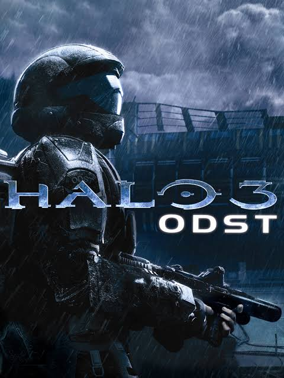
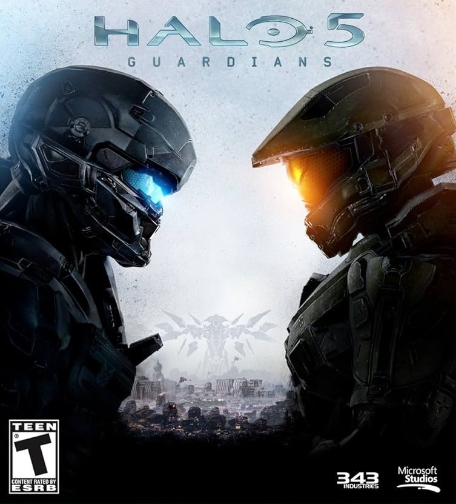
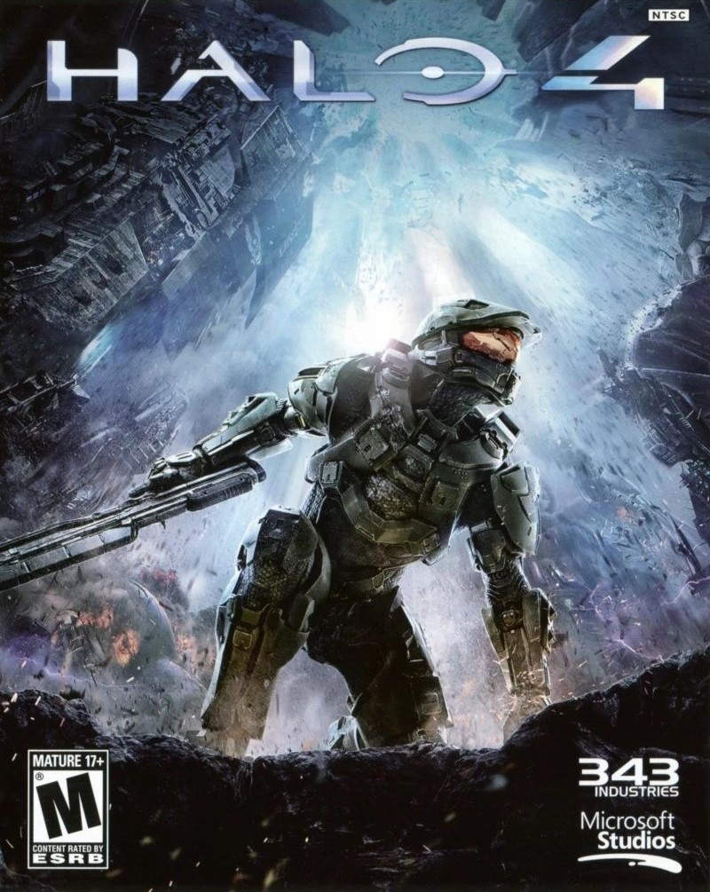
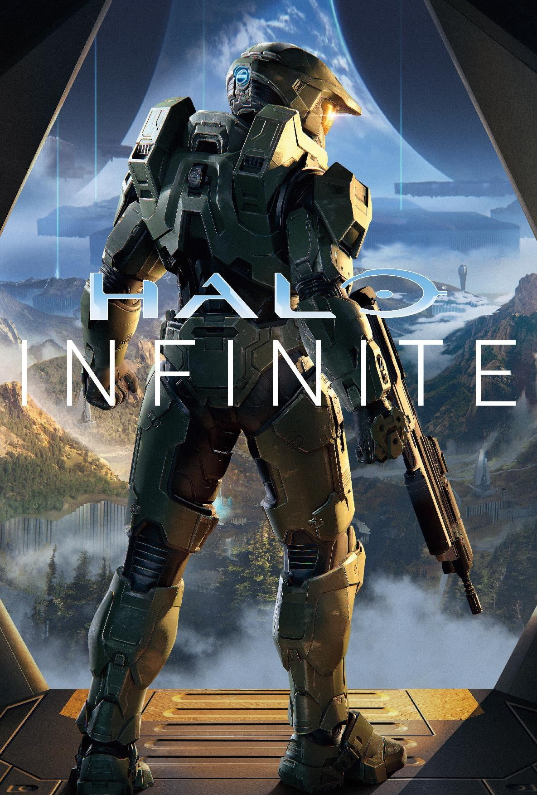
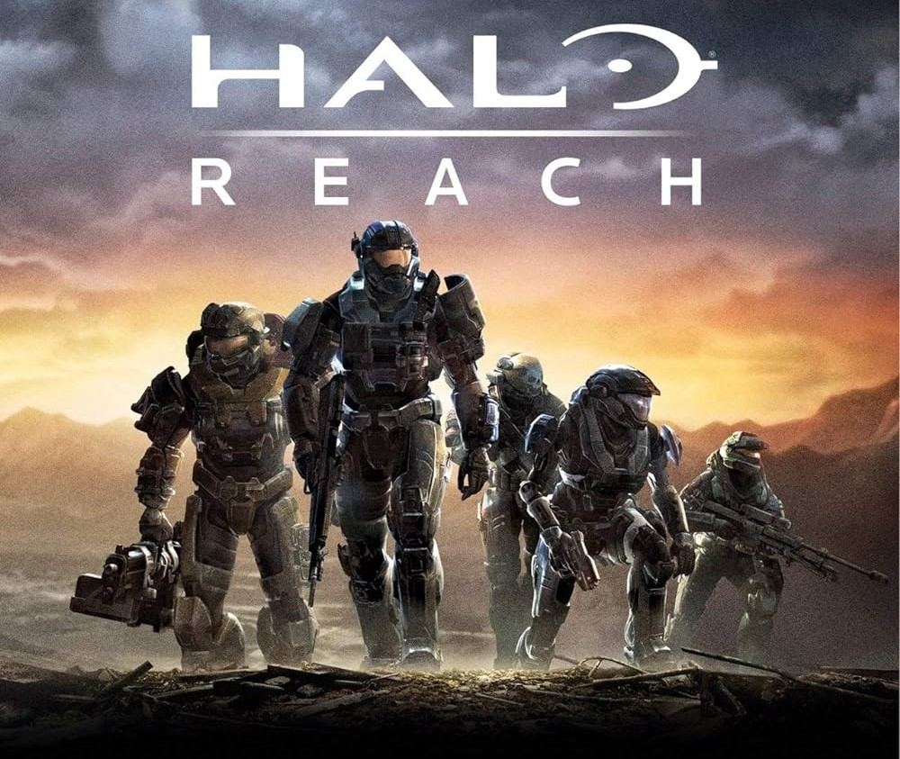

One of my favorite hobbies would have to be playing video games. It's something I've loved since I was a kid and always will continue to love. A specific part of that would be playing Halo or speedrunning the Halo games campaigns to see how fast I can get it done. This includes Halo CE, Halo 2, Halo 3, Halo 3 ODST, Halo Reach, Halo 4, Halo 5 and Halo Infinite. And I'll be doing is ranking them from the easiest to speedrun to the hardest on the legendary difficulty.
Sadly but surely I would have to say that the easiest to speedrun on legendary difficulty would be Halo 3 ODST. But that's not to say it's a bad game by any means is still a lot of fun and probably my favorite Halo campaign. Some things that make it easier would be how spread out the enemies are and the amount of them also you skip a lot of them if you feel like it.
The second easiest would probably be Halo 5. The reason is the enemies and how they act is one and the enemies in general aren't too hard. Unless it's the warden because he can get pretty annoying and difficult to deal with if you don't know how. As well as the new selection of weapons and gun racks that are really common.
The third easiest would be Halo 4 in my opinion. It shares a lot of the same faults as Halo 5. But it has its fair share of annoying enemies as well like the Promethean knights and the Protheman crawlers. The worst thing about them is probably just the sheer amount the game throws at you at once. I also dislike them because they have no personality but yeah in general a bit harder than 5.
Many might not agree with me here on this but for number 5 I think Halo Infinite goes here. Yes, this is definitely an easier Halo as well but it still has its challenges and personally, I think a few more than 4 and 5b. Like for example the amount of enemies with different abilities that are hidden all over the map. As well as the number of enemies in vehicles around the map and the areas with boss enemies can take a while to get past. But there are also abilities that the character has like a grapple which helps a lot with past certain areas or to them faster. But quite of few of them you can't skip which is why I put Halo Infinite here.
Halo reach is where things start to get somewhat pretty difficult. A huge reason for that is how the missions are structured meaning that most are on a bigger scale compared to the other entries in the series. Another thing I think makes this more difficult would be the lack of direction in some missions which can lead to unexpected surprises with lots of enemies. And in general the types of enemies like lots of special elites.

I think Halo 3 is next because it is a big step up in difficulty compared to any of the other games listed so far. A huge reason is because of the amount of weaker enemies it throws at you. Or the amount of brutes that rush you and can one-shot you if they just barely touch you. As well as the number of flood missions there are but is still a lot of fun to play.
.jpg)
 ©
©